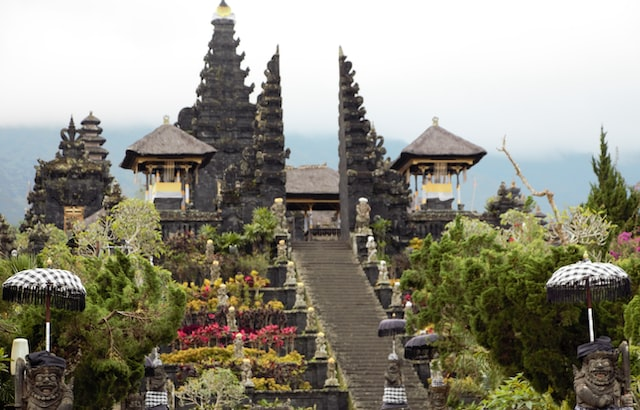
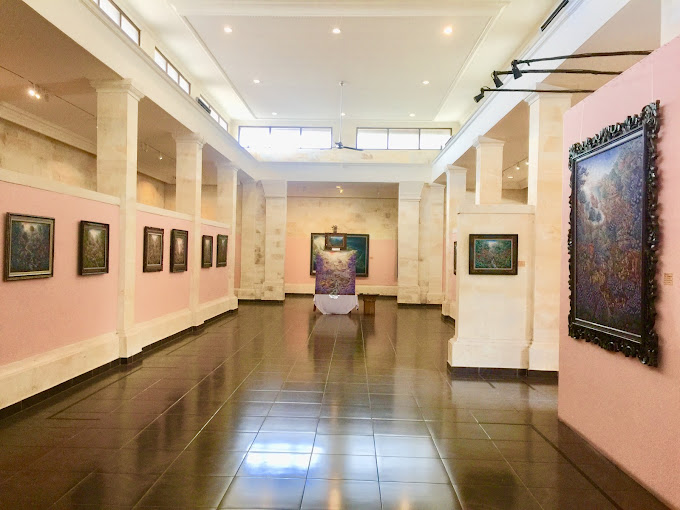
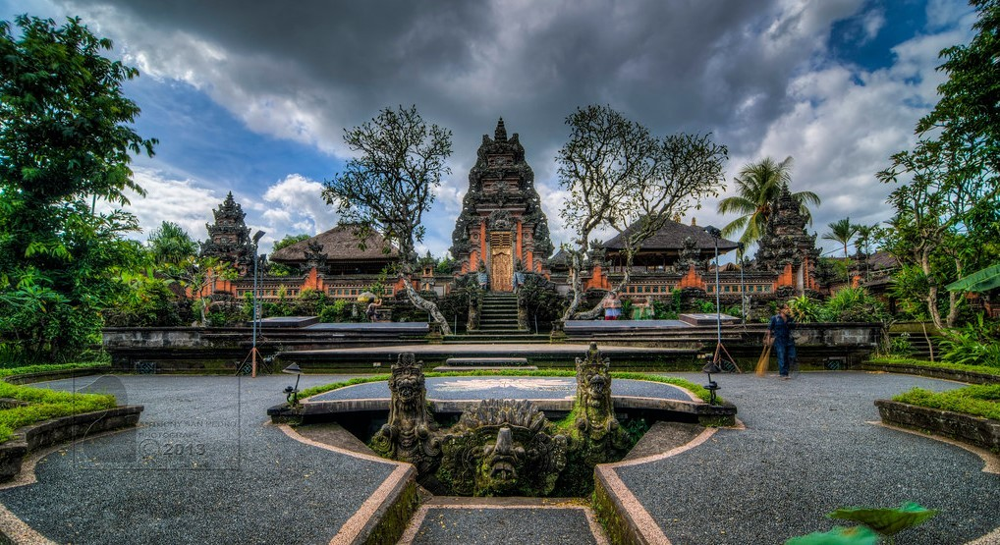
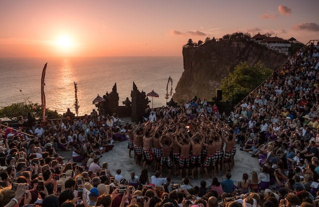
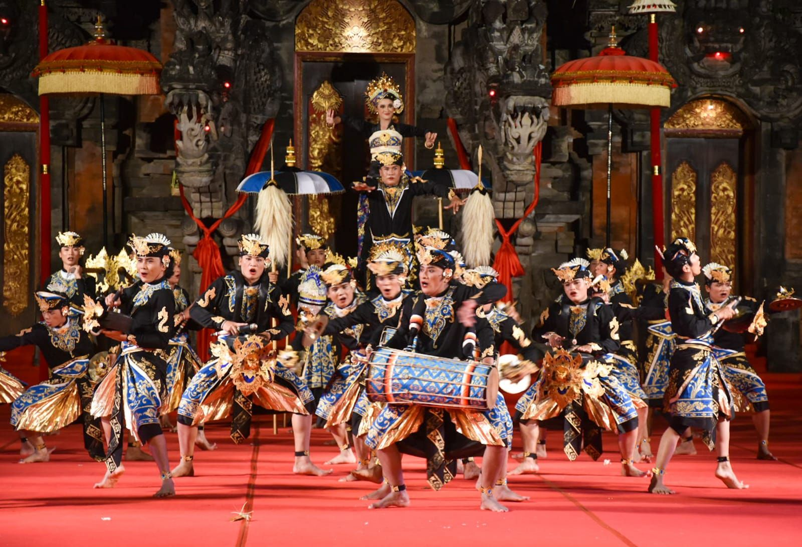

Bali dikenal sebagai pulau yang kaya akan budaya dan seni. Ada banyak destinasi wisata budaya di Bali yang menawarkan pengalaman unik dan menarik bagi para wisatawan yang ingin mengenal dan menikmati seni, musik, dan tarian Bali yang asli dan tradisional. Berikut ini adalah beberapa destinasi wisata budaya di Bali yang patut dikunjungi:

Pura Besakih merupakan pura terbesar dan terpenting di Bali. Pura ini terletak di lereng Gunung Agung, dan dianggap sebagai pura suci oleh umat Hindu Bali. Selain menjadi tempat beribadah, Pura Besakih juga menawarkan keindahan arsitektur tradisional Bali yang menakjubkan. Di sini, para wisatawan dapat melihat pahatan batu, relief, dan dekorasi yang indah, serta mengenal lebih dalam tentang sejarah dan filosofi Hindu Bali.

Museum Puri Lukisan adalah museum seni pertama di Bali, yang didirikan pada tahun 1954. Museum ini menyimpan banyak koleksi seni Bali, termasuk lukisan tradisional, patung, kerajinan tangan, dan fotografi. Di sini, para wisatawan dapat menikmati seni Bali dari masa ke masa, serta mengenal lebih dalam tentang seni dan budaya Bali.

Puri Saren Agung merupakan istana kerajaan di Ubud, yang telah berdiri sejak abad ke-18. Di sini, para wisatawan dapat melihat bangunan tradisional Bali yang indah, termasuk gedung-gedung utama, kolam renang, dan taman yang hijau. Selain itu, di sini juga sering diadakan pertunjukan tari dan musik Bali, yang memperlihatkan keindahan dan keunikannya.

Kecak Dance adalah tarian tradisional Bali yang sangat terkenal, yang biasanya dipentaskan di Pura Uluwatu. Tarian ini diiringi oleh suara koor laki-laki yang menghasilkan suara "cak-cak-cak" yang khas. Di sini, para wisatawan dapat menikmati keindahan dan keunikan tarian ini, serta melihat pemandangan matahari terbenam yang spektakuler di pantai Uluwatu.

Bali Arts Festival adalah festival seni dan budaya terbesar di Bali, yang diadakan setiap tahun pada bulan Juni. Festival ini menampilkan berbagai macam pertunjukan tari, musik, seni lukis, patung, kerajinan tangan, serta parade budaya. Di sini, para wisatawan dapat menikmati berbagai macam seni dan budaya Bali, serta mengenal lebih dalam tentang kekayaan budaya Bali.
Itulah beberapa destinasi wisata budaya di Bali yang menawarkan pengalaman unik dan menarik bagi para wisatawan yang ingin mengenal dan menikmati seni, musik, dan tarian Bali.
Jika Anda tertarik untuk menjelajahi kekayaan budaya Bali, Bali Mutiara Tours menawarkan berbagai Paket Tour Bali yang dirancang khusus untuk memperkenalkan Anda pada destinasi wisata budaya di Bali. Dengan pengalaman dan pengetahuan lokal yang luas, Bali Mutiara Tours akan membantu Anda menemukan pengalaman wisata budaya yang sesuai dengan minat dan kebutuhan Anda. Jangan ragu untuk menghubungi Bali Mutiara Tours untuk informasi lebih lanjut mengenai paket tours dan jadwal kegiatan yang sesuai dengan waktu liburan Anda. Selamat menikmati pesona keindahan budaya Bali!

Hubungi
Kami